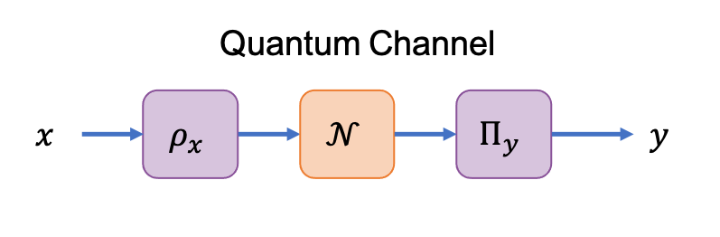

CV Background
The communication value (CV) measures the performance of classical communication over a channel.
Classical Channels
A classical channel $\mathbf{P} : [n] \to [n']$ is treated as a black-box with transition probabilities $P(y|x)$ where $x\in[n]$ and $y\in[n']$.
The communication value $(\text{cv})$ of a classical channel is defined as:
\[\text{cv}(\mathbf{P}) = \sum_{y\in[n']} \max_{x\in[n]} P(y|x).\]
The communication value is simply understood as being analogous to the maximal success probability of guessing the input $x$ given the output $y$. Furthermore, this quantity can be applied to any communication channel that can be characterized by its transition probabilities $P(y|x)$ and is therefore a device-independent measure of communication performance.
Quantum Channels
A quantum channel is defined as a completely-positive trace-preserving map $\mathcal{N} \in \text{CPTP}(A \to B)$ where $A$ and $B$ denote the input and output Hilbert spaces respectively.

Classical communication over a quantum channel is performed in three steps:
- The input $x\in[n]$ is encoded into a quantum state $\rho_x\in\mathcal{H}^A$ on the input Hilbert space.
- State $\rho_x$ is sent through the quantum channel $\mathcal{N}$ evolving the state to $\mathcal{N}(\rho_x)\in\mathcal{H}^B$ on the output Hilbert sapce.
- The evolved state is measured with the positive operator-valued measure (POVM) $\{\Pi_y\}_{y=1}^{n'}$ to decode the value $y\in[n']$.
We note that the formal restrictions on quantum states are $\rho_x\in\mathcal{H}^A$, $\rho_x = \rho_x^{\dagger}$, $\text{Tr}[\rho_x] = 1$, and $\rho_x \geq 0$. Likewise, the restrictions on POVMs are $\Pi_y \in \mathcal{H}^B$, $\Pi_y \geq 0$, $\Pi_y = \Pi_y^{\dagger}$, and $\sum_{y=1}^{n'}\Pi_y = \mathbb{I}_B$.
The communication value of a quantum channel $\mathcal{N}$ is defined as:
\[\text{cv}(\mathcal{N})= \max_{\{\Pi_y\}_{y=1}^{n'}, \{\rho_x \}_{x=1}^n} \{\text{cv}(\mathbf{P}) \; | \; P(y|x) = \text{Tr}[\Pi_y\mathcal{N}(\rho_x)]\},\]
where $n, n'\in \mathbb{N}$ are selected as the smallest values that yield the maximal value for the communication value. In practice, $n=n'=d_B^2$ where $d_B$ is the Hilbert space dimension of the POVM measurement.
The communication value of a quantum channel can alternatively be cast as an optimization over the separable cone, $\text{SEP}(A\;:\;B)$, where $A$ and $B$ are the input and output Hilbert spaces of channel $\mathcal{N}$. The communication value of a quantum channel then takes the form:
\[\begin{aligned} \text{cv}(\mathcal{N})& = \max_{\Omega^{AB}} \text{Tr}[\Omega^{AB}J_{\mathcal{N}}] \\ \hspace{1cm} & \text{s.t.} \quad \text{Tr}_A[\Omega^{AB}] = \mathbb{I}^B; \\ \hspace{1cm} & \qquad \Omega^{AB} \in \text{SEP}(A\;:\;B), \end{aligned}\]
where the quantum channel $\mathcal{N}$ is represented by its Choi operator $J_{\mathcal{N}}$.
Certifying Communication Value
In general cases, the communication value of a quantum channel is challenging to compute. However, upper and lower bounds can be computed with relative efficiency:
- The upper bound is computed using the
pptCVmethod to evaluate the:dualof the PPT Relaxation of the CV. - The lower bound is computed using the
seesawCVmethod to evaluate the See-Saw Optimization of the CV.
Using these bounds, we certify the communication value as:
\[\text{seesawCV}(\mathcal{N}) \leq \text{cv}(\mathcal{N}) \leq \text{pptCV}(\mathcal{N}, \text{:dual})\]